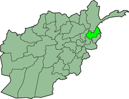
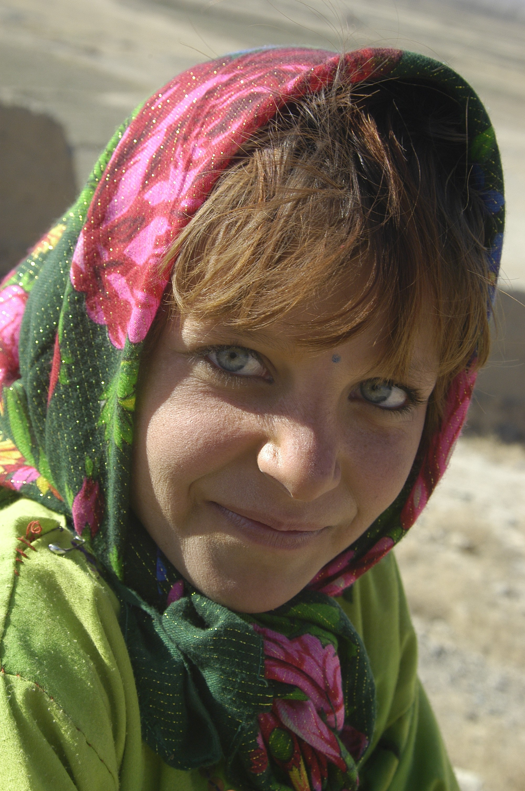

La geografia montañosa e inaccesible les permitio mantenerse aislados y conservar su relgion, Islam-Sunismo y su cultura,fueron convertidos al Islam por la fuerza a fines del siglo 19,su fama es y sigue siendo la de feroces guerreros,se estima que son 125.000 y 300.000 en total

Los nuristanis llegaron a Afganistán huyendo de la expansión del Islam hacia el este. Hablan un idioma indoeuropeo único. Los nuristanis fueron conquistados por Amir Abdur Rahman Khan en 1895-1896 y se vieron obligados a abandonar sus antiguas creencias religiosas en favor del Islam.Los hombres y mujeres nuristani siguen una estricta división del trabajo con los hombres trabajando en el pastoreo de ganado, mientras que las mujeres trabajan en la producción de cereales o en las terrazas de regadío.